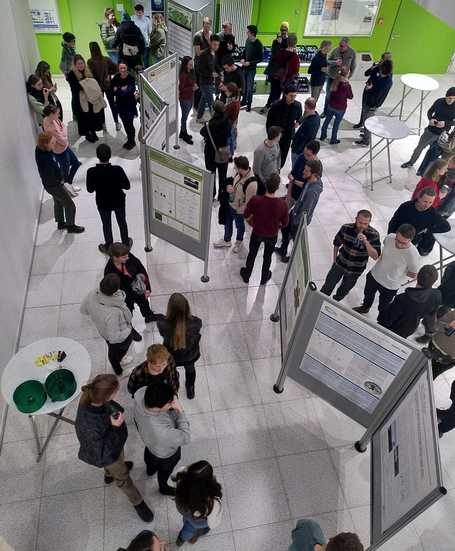
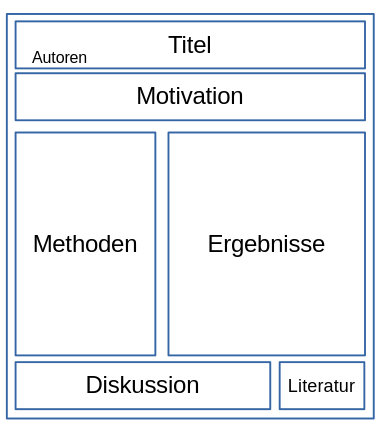

Wissenschaftliche Poster
Grundlagen
Wissenschaftliche Poster dienen zur Kommunikation von Fakten, Projekten, Ergebnissen, Ideen oder Gedankengängen. Auf wissenschaflichen Konferenzen gibt es meistens mehrere Sessions mit thematisch gebündelten Postern.

Die Inhalte des wissenschaftlichen Posters sollten ohne weitere Erklärungen - also nur durch Abbildungen und Text - weitestgehend verständlich sein. In der Posterpräsentation sollten dann die Hauptaspekte kommuniziert werden sowie Details geklärt und Fragen beantwortet werden.
Bestandteile eines Posters

Titel
Aussagekräftig, Gerne Spoilern!
Autor*innen
Wird erstaunlich oft vergessen
Motivation und Relevanz Fragestellung / Hypothese / Zielsetzung
Kurz und knapp: Worum geht’s und warum ist das cool?
Daten & Methoden Ergebnisse
- Hauptteil des Posters bekommt logischerweise am meisten Platz
- So wenig Text wie möglich, so viel wie nötig.
- Grafiken müssen ansprechend gestaltet sein - sie sind der Blickfänger des Posters!
Einordnung / Diskussion / Fazit
Kurz und knapp: Was haben wir gelernt?
Literaturverzeichnis
Zitiert wird nur, was absolut nötig ist (z.B. eine Standardmethode o.ä.). Normalerweise nicht mehr als 5 Referenzen.
Layout & Schrift
- Format: A0 (841 x 1189 mm)
- Hoch- oder Querformat ist Geschmacksache!
- Whitespace nicht vernachlässigen, also etwas Platz zwischen den Inhalten
Schriftgrößen
- Titel: ~ 80pt
- Überschrift: ~ 40pt
- Text: ~ 24 pt
- Bildunterschrift: ~ 20 pt
Software
Präsentationssoftware
PowerPoint / Impress / Google Slides etc.
- Ideal für Einsteiger*innen
- Einfaches Layout durch Drag and Drop
- Eine A0 Folie gestalten
- Viele Vorlagen verfügbar
Vektorgrafik
Inkscape / Illustrater etc.
- Etwas komplizierter im Layout
- Skaliert dafür besser z.B. keine pixeligen Grafiken.
- Rendert in der Regel performanter
Beispiele
So besser nicht:

Eher so:

Weiterführende Links
Designtipps und Inhalte präsentieren fourwaves.com: How to make a successful scientific poster